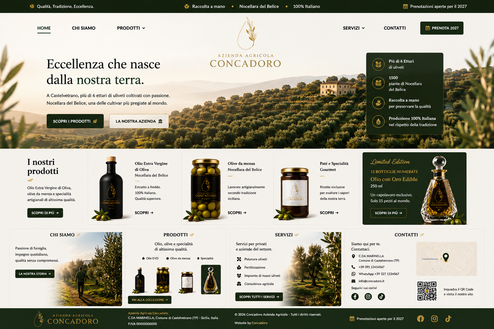

OLIO EXTRA VERGINE

AZIENDA AGRICOLA • CASTELVETRANO, SICILIA
Eccellenza che nasce
dalla nostra terra.
A Castelvetrano, più di 6 ettari di uliveti coltivati con passione. Nocellara del Belice, una delle cultivar più pregiate al mondo.
6+
ETTARI DI ULIVETI
1500
PIANTE DI NOCELLARA
100%
ITALIANO
2027
PRENOTAZIONI APERTE
LA NOSTRA STORIA
Tradizione agricola,
visione contemporanea.
Concadoro nasce a Castelvetrano, nel cuore della Sicilia, con l'obiettivo di valorizzare la Nocellara del Belice attraverso qualità, cura del territorio e una presentazione premium.
Ogni fase nasce dal rispetto per la nostra terra: dalla cura degli ulivi alla raccolta manuale, fino alla trasformazione dei nostri prodotti.
LA COLLEZIONE
I nostri prodotti
Una selezione di prodotti che raccontano la nostra terra: olio extra vergine di oliva, olive da mensa, specialità gourmet e una Limited Edition esclusiva.

OLTRE I PRODOTTI
Servizi agricoli
Mettiamo la nostra esperienza agricola a disposizione di privati e aziende del settore.
Potatura uliveti
Fertilizzazione
Impianto di nuovi uliveti
Consulenza agricola
PARLIAMO DI CONCADORO
Contatti
Siamo qui per raccontarti la nostra azienda, i nostri prodotti e le prossime raccolte.
Dove siamo
C.DA MARINELLA
Comune di Castelvetrano (TP)
Sicilia, Italia